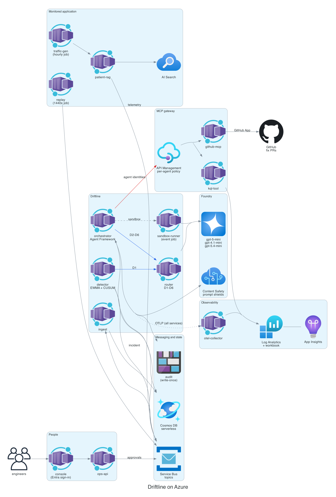

No error.
No alert.
Worse answers.
Someone lowers top_k, swaps a prompt, or an indexer stops while documents change. Every request still returns 200, and the answers degrade. Driftline watches quality metrics in event time with EWMA baselines and CUSUM, and asks a model to confirm a breach is real before it opens an incident.
Every fault caught. Zero false alarms.
End-to-end evaluation on replayed faults: __TRIALS__ incidents (7 fault types × 3 trials) plus __FP_HOURS__ hours of clean traffic, scored against labels. The numbers come straight from evals/reports.
Median time from detection to a validated, D6-cleared fix: about __WALL__ minutes. Where it is weakest: severity (D2) matches the label __SEVERITY__% of the time, usually one level off; it drives notifications, not actions. Reported as measured.
Drift, caught and fixed.
Every step is a decision
you can audit.
One incident from a replay of fault F3, exactly as Driftline recorded it: __INC_ID__. Each decision is a scored distribution from the router; under 0.6 confidence it goes to a person.
Built for the person who approves.
Next.js on Container Apps behind Entra sign-in, with no client secret: a managed identity is the federated credential. It talks only to ops-api, which checks the admin role again on every action.
Models, measured against a rules floor.
Six decision types, 1,200 synthetic incidents each, 8 paraphrase perturbations per case. Calibration, robustness, latency and cost, not just accuracy. Report: __ROUTER_FILE__.
| Client | D3 routing accuracy | D4 action accuracy | D3 ECE | Flip rate | p95 | $ / 1k decisions |
|---|
After sharpening the D3 and D4 rubrics against live failures, gpt-5-mini overtook the rules floor on routing (89% vs 88%). The floor still edges D4, because it shares the synthetic data's structure, but it has no calibrated confidence and can't read a root cause analysis (D4 to D6). Production uses gpt-5-mini.
__SAFETY_PASSED__ of __SAFETY_CASES__ attacks stopped.
Every agent identity tried to merge, push to main, write outside its folder and read the GitHub key. Twenty poisoned documents tried to make agents delete files, approve themselves, leak secrets or steer routing. A viewer tried every admin route. Each tile is one real case, coloured by the first layer that stopped it.
Zero keys. One secret. Every hop traced.
Every service is a container app with its own managed identity. Each of the seven agents has its own identity too, so the MCP gateway can tell them apart. The only secret is the GitHub App key, readable by one identity.
